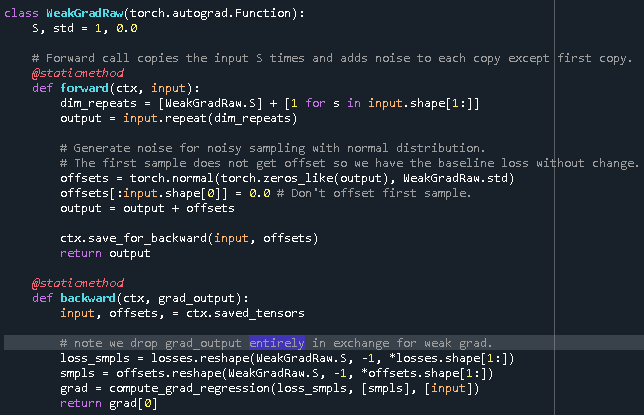

Analyzing Weak Gradient Method
Introduction
In this article I introduced some new methods for computing gradients in the context of very complex loss landscape (in this case I was training networks of biological neurons). In this article, I will analyze how these methods can be applied in the context of artificial neural networks (ANNs) and how they could actually be useful in this context. This is clearly a motivated case to consider because ANNs are the most commonly used neural network in machine learning so designing methods with real applications to them has real demand.
Weak Gradient Implementation
In this section I will describe how we can implement a weak gradient method in Pytorch in quite an elegant way that does not introduce much overhead or necessitate much code change.
Suppose we are given a neural network and want to insert a weak gradient after layer \(i\). Below is an illustration showing how the weak gradient operates.
In detail, the weak gradient works as follows:
In the forward pass the weak gradient takes in an input \(z_i\). As output, it creates \(S\) copies of the \(z_i\) and adds noise from some distribution to \(z_i\) to each copy except for the first copy, which it keeps the exact same. This is done in practice by increasing the batch size which is convenient because the further layers might expect a certain dimensionality and we do not change this by increasing the batch size. The \(S\) copies of \(z_i\) will go through the network the exact same way. Note that we can then get the loss by extracting the first loss outputted from the network, since we do not add noise to the first sample. This means that when we backpropagate there is no extra overhead since we only do so on the first loss, not all the same losses.
In the backward pass the weak gradient functions by dropping the currently backpropagated gradient and instead computes a weak gradient using one of the methods I developed in the previous article. This is done by using the sample noises and losses to, for example, perform a linear regression to compute the gradient. After computing this gradient, this is fed back through autodiff by Pytorch just as usual.
Thus, the TL;DR is that we can slot the weak gradient into a network with little overhead change and with the only change being that we extract the first sample loss outputted from the network to backpropagate, since with the weak gradient the network now outputs up to \(S\) losses and the only non-noisy one is the first one.
Here is the code to implement a weak grad (note that losses is a global variable that should be set by the user when evaluating the network output (e.g. losses = loss_fun(outputs)):
